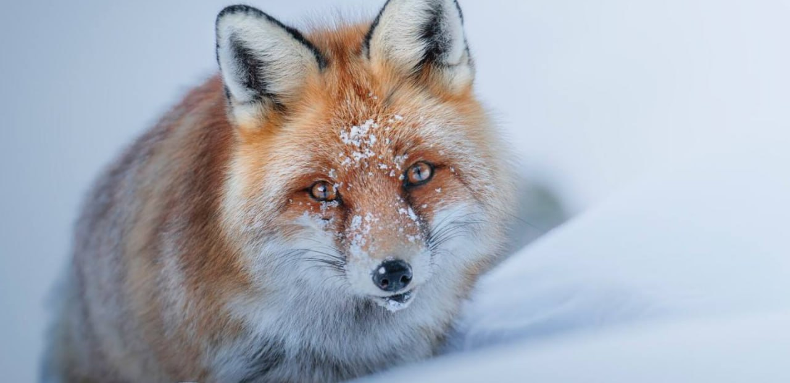

Parco dell’Etna
Nonostante l’aspetto aspro del territorio, il Parco dell’Etna ospita una sorprendente biodiversità. La fauna è composta da numerose specie adattatesi alle condizioni uniche del vulcano. Tra gli animali più comuni ci sono le volpi, i conigli selvatici e i ricci. Il parco è anche un luogo privilegiato per l’osservazione degli uccelli, con specie come il falco pellegrino, l’allocco e l’aquila del Bonelli. La lucertola campestre e altri piccoli rettili completano il panorama faunistico.
Parco Nazionale del Gran Paradiso
Il Parco Nazionale del Gran Paradiso è noto per ospitare una straordinaria varietà di fauna alpina, molte specie delle quali sono diventate simbolo del parco. Il più iconico è lo stambecco delle Alpi, salvato dall’estinzione proprio grazie alla creazione del parco. Oggi, questo animale maestoso è facilmente avvistabile nei prati e sulle rocce del parco.
Altre specie includono il camoscio alpino, la marmotta, e rapaci come l’aquila reale e il gipeto, recentemente reintrodotto. Durante le escursioni, non è raro scorgere piccoli abitanti delle Alpi come il fringuello alpino o il picchio muraiolo, che si mimetizzano tra le rocce.
Parco Nazionale del Pollino
Il Parco Nazionale del Pollino ospita una ricca biodiversità, rendendolo una delle aree naturali più preziose d’Italia. Tra i mammiferi, si possono trovare il lupo appenninico, simbolo del parco, che si aggira silenziosamente tra i boschi, e il cinghiale. Cervi e caprioli sono altre presenze comuni, mentre nelle zone più alte si avvistano aquile reali e poiane.
Gli amanti dell’avifauna possono godere di un’esperienza unica, con la possibilità di osservare numerose specie di uccelli, tra cui il picchio nero e il corvo imperiale. L’habitat variegato del parco ospita anche anfibi e rettili, come la salamandra pezzata e la vipera dell’Orsini, specie tipiche delle zone montuose.
Parco Nazionale delle Dolomiti Bellunesi
Il Parco Nazionale delle Dolomiti Bellunesi è un rifugio per numerose specie animali, molte delle quali rare o protette. Tra i mammiferi, il camoscio alpino è una presenza caratteristica delle aree più alte, mentre il cervo e il capriolo popolano le zone boschive.
La presenza del gallo cedrone e del picchio nero testimonia la qualità dell’ecosistema forestale del parco. Tra i rapaci, l’aquila reale e il gufo reale dominano i cieli, mentre i piccoli abitanti delle rocce, come la marmotta, completano il quadro di una fauna ricca e diversificata. L’ambiente fluviale ospita la rara trota marmorata, simbolo dell’equilibrio ecologico delle acque del parco.